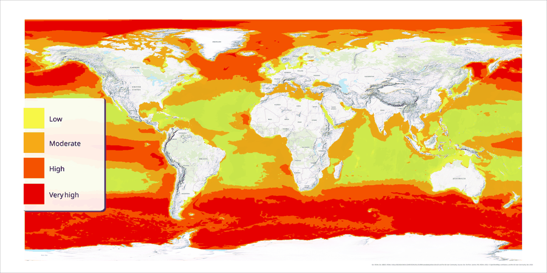

Where Could the Ocean Take Up More Carbon?
Two global suitability indices for marine carbon removal — iron fertilization and ocean alkalinity enhancement — mapped on a common scale. Each covers about a fifth of the ocean. They overlap on 3.39% of it.
Read the project